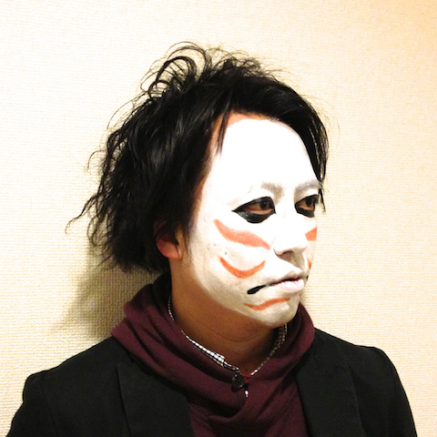
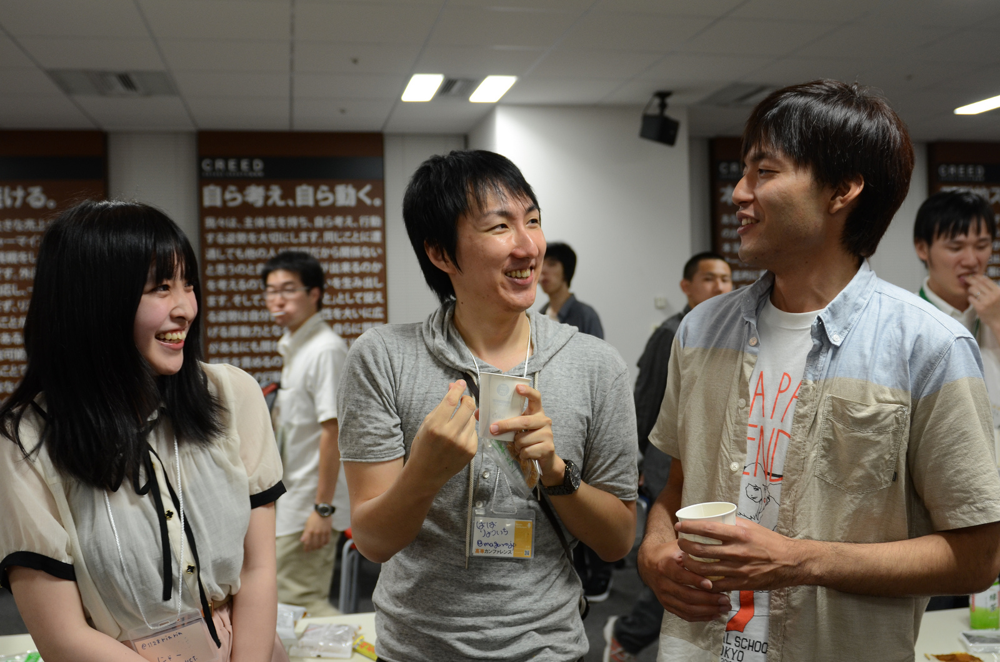
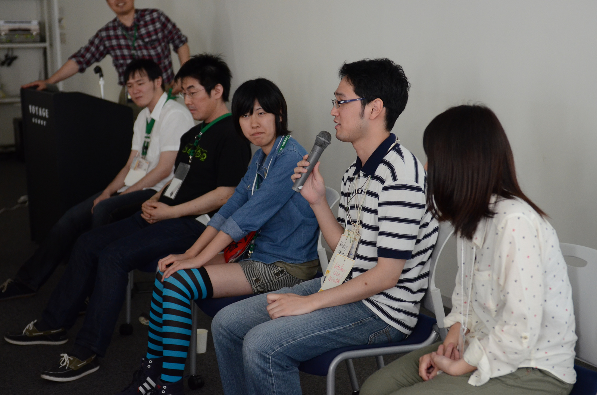
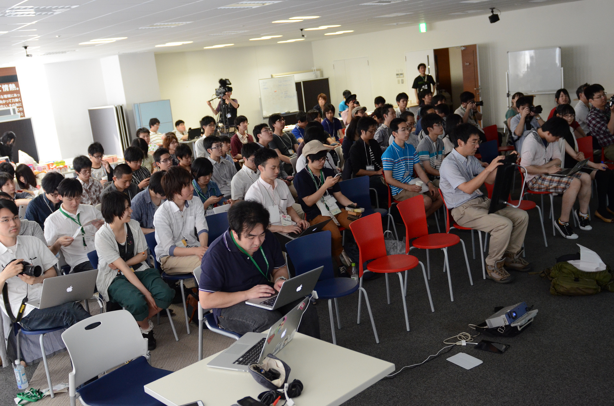

高専カンファレンス6周年記念パーティ
日程: 2014年6月14日
会場: ピクシブ株式会社

june29 と申します。こんにちわ！
この春に「高専生」から「高専卒業生」にクラスチェンジされた方も多いことと思います。
みなさま、それぞれの日々を謳歌されていますでしょうか。
さて、そんな季節に開催宣言です！
みなさまがいくつもの季節を過ごして歳を重ねるように、
高専カンファレンスもまた、歴史を重ねてきました。
昨年、2013年には、高専カンファレンスの5周年を祝うパーティを催しました。
そのパーティがとても盛り上がったものですから、味をしめて、今年もやっちゃいます。
題して「高専カンファレンス6周年記念パーティ」です！
タイムテーブル
| 開始 | 終了 | コンテンツ |
|---|---|---|
| 13:00 | 14:00 | 開場 |
| 13:00 | ----- | 受付開始 |
| 14:00 | 14:10 | 開会のことば |
| 14:10 | 15:00 | 歴代実行委員長のパネルディスカッション |
| 15:00 | 15:10 | 休憩 |
| 15:10 | 15:40 | @igaiga555 と @neo6120 の漫談 |
| 15:40 | 15:50 | 休憩 |
| 15:50 | 17:00 | LT大会 + つくったもの自慢の発表 |
| 17:00 | 18:30 | 懇親会(寿司) |
| 18:30 | 19:00 | 撤収 |
発表者募集
つくったもの自慢大会
自分がつくったものを紹介＆発表ができます。
当日は常設の展示場所も用意する予定なので、下記のフォームから必要事項を記入してご応募ください。
また、紹介をするためのデモ枠や発表枠も用意するので、発表資料等をご用意ください。
展示物によっては(例えば自律して飛んだり走ったりするもの)展示が出来ない可能性もあります。その場合は応募内容を確認し、実行委委員の方から改めてご連絡致します。
常設展示・スペース
今回はpixiv様の広い会場を借りることができたので常設展示をいくつか用意します。
高専カンファレンス写真展
過去に開催された写真を大きなスクリーンで写しだして、思い出話に花を咲かせましょう！
交流ラウンジ
主に交流スペースとして用意します。また、ドリンクフリーなので休憩時間などにご利用ください。
ささやかながら、高専出身のDJによるライブなども行われる予定です。
また会場では、 ジャンプは禁止されているのでお控えください。
つくったもの自慢展示
つくったもの自慢大会で応募された方々の作品を展示します。
昨年の様子


